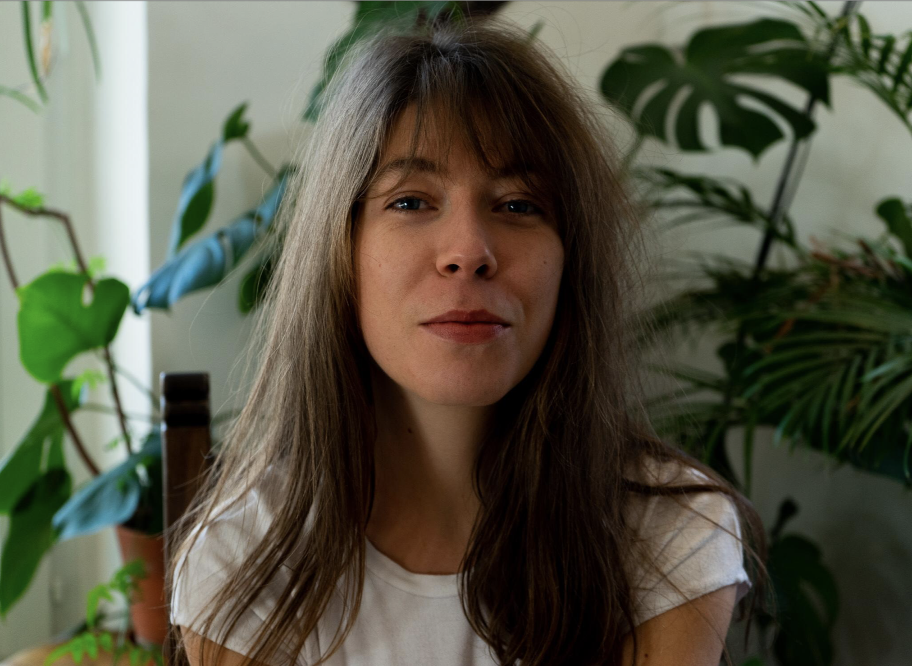

A propos

Biographie
Fanny Desarzens vit à Lausanne et c’est à Genève qu’elle entame des études en 2015. En 2018, elle obtient son Bachelor d’arts visuels à la HEAD. C’est en réalisant des images qu’elle comprend que l’écriture est son meilleur moyen d’en créer.
Elle s’élance alors dans son travail littéraire. Au travers d’histoires simples, elle tente de travailler le langage au corps, de pétrir les mots, d’en extraire le suc, à l’image d’artisans façonnant une matière. Bien que la langue soit intangible, Fanny s’efforce d’en saisir la texture, la sonorité, pour élaborer ses écrits. s’inscrit dans la lignée des artisans. Sauf qu’au contraire d’eux, elle s’efforce de façonner une matière intangible.
Ce qui lui importe, c’est de trouver un équilibre entre le style et l’histoire. Le langage devient alors un personnage en soi. Car, pour elle, l’écriture est un matériau brut, un support et un outil avec lesquels l’indéfinissable peut enfin être nommé. Car il s’agit de ramener à la surface les choses enfouies, de révéler des émotions. C’est donc avec un langage instinctif, épuré, qu’elle essaie de dévoiler ce qui était jusque-là dissimulé.
L’auteure s’inspire notamment des écrits de C.F. Ramuz, de Patti Smith, de Paolo Cognetti et de Corinna Bille. C’est grâce à leur façon de raconter, et à ce qu’ils choisissent de raconter, qu’elle parvient à donner du relief à son propre travail.